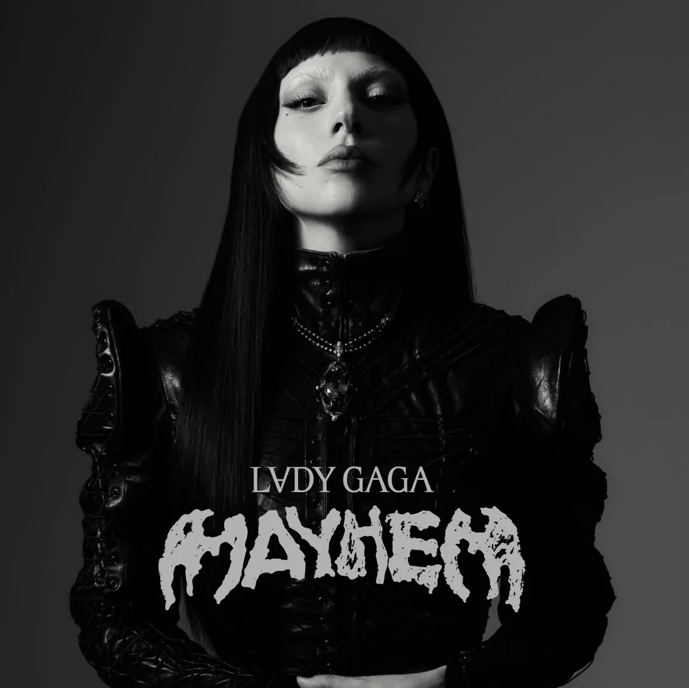

Lady Gaga
Egyedi stílusáról és erős üzeneteiről ismert popelőadó.
Különböző stílusok és ikonikus előadók
Egyedi stílusáról és erős üzeneteiről ismert popelőadó.
Érzékeny, kreatív és stílusikon előadó, akinek munkássága az önazonosságot, a szabadságot és az érzelmi mélységet képviseli.
Erőteljes énekhang és modern pop hangzás jellemzi.
Modern pop zene és sötétebb témák jellemzik.
Sokoldalú előadó, aki a popot, rapet és R&B-t ötvözi.

Letisztult pop hangzás, személyes szövegek és erős vizuális stílus.
Innovatív pop és alternatív hangzás, energikus produkciókkal.

Melankolikus hangulatú dalok és filmes atmoszféra.

Önkifejező szövegek és alternatív pop stílus.

Különleges vizuális világ és sötétebb témák.

Érzelmes szövegek és egyedi zenei stílus.
Fiatalos energiával teli dalok és őszinte szövegek.
BLACKPINK tag, karizmatikus stílus és ikonikus pop előadó.

Energetikus dalok, erős rap és önálló zenei identitás.

Friss hangzás és fiatalos stílus jellemzi őket.

Magabiztos előadásmód és erőteljes zenei stílus.
Divatos hangzás és karizmatikus előadás.

Változatos zenei stílusok és kreatív koncepciók jellemzik őket.
Különböző zenei műfajokat ötvöznek, dinamikus előadásmód.